전자캐드기능사 (2006-04-02 기출문제)
1과목: 전기전자공학(대략구분)
1. 발진주파수가 운용 중 변동되는 주요원인과 관계가 먼 것은?
- 부하의 변화
- 주위온도의 변화
- 전원전압의 변화
- 발진조건의 변화
(정답률: 45%)

2. 2×103[㏝]의 자극에서 나오는 자속(자기력선)은 몇 개인가?(오류 신고가 접수된 문제입니다. 반드시 정답과 해설을 확인하시기 바랍니다.)
- 2×106[개]
- 2×10-6[개]
- 2×103[개]
- 2×10-3[개]
(정답률: 33%)
3. 저항이 무시된 coil에 흐르는 교류 전류의 위상을 공급 전압의 위상보다 어떠한가?
- 90˚ 빠르다.
- 90˚ 늦다.
- 시간에 따라 다르다.
- 같다.
(정답률: 65%)
4. 부궤환 증폭기를 사용하였을 때 해당되지 않는 사항은?
- 외부잡음을 제거하여 이득이 증가한다.
- 비직선 일그러짐이 적어진다.
- 안정도가 양호하여 진다.
- 주파수 특성이 양호하여 진다.
(정답률: 50%)
5. R=7[㏀], XL=7[㏀], Xс=7[㏀]의 소자가 직렬로 연결되었을 때 공진 상태에서의 합성 임피던스는?
- 21[㏀]
- 7[㏀]
- 8.5[㏀]
- 14[㏀]
(정답률: 50%)
6. 20[㎑] 발진신호를 오실로스코프로 측정시 Sweep time=0.01[㎳/㎝] 상태에서 신호의 한 주기는 화면 눈금 몇 칸(㎝]을 차지하겠는가?
- 1
- 2
- 2.5
- 5
(정답률: 23%)
7. 비저항(저항률)의 단위는?
- Ωㆍm2
- Ωㆍ㎝
- Ω/cm2
- gㆍΩㆍ㎝
(정답률: 44%)
8. 정현파는 어떠한 매개체를 이용하여 다양한 방법의 변조를 시도하는데 이에 해당되지 않는 방식은?
- 진폭변조
- 위상변조
- 반송파변조
- 주파수변조
(정답률: 54%)
9. 일반적인 연산증폭기의 특징 중 옳지 않는 것은?
- 입력 임피던스가 크다.
- 출력 임피던스가 작다.
- 동상 신호제거비가 0이다.
- 전압 이득이 크다.
(정답률: 65%)
10. 1000[㎑]의 반송파를 신호파 최대주파수 1[㎑]로 진폭변조(DSB) 했을 경우 점유 주파수 대역폭은?
- 999[㎑]~1000[㎑]
- 1000[㎑]~1001[㎑]
- 999[㎑]~1001[㎑]
- 998[㎑]~1000[㎑]
(정답률: 60%)
11. 6[㎌]과 4[㎌] 콘덴서 2개를 직렬 연결할 때의 합성용량은 얼마인가? 또, 이 회로에 250[V]의 전압을 가하면 총전량은 얼마인가?
- 1.2[㎌], 3.6×10-4[C]
- 2.4[㎌], 60×10-5[C]
- 3.6[㎌], 3.6×10-4[C]
- 4.8[㎌], 60×10-5[C]
(정답률: 65%)
12. 실효값 60[㎐], 10[A] 사인파 교류의 순시값 표시는?
- i=10 sin 120π t
- i=7.07 sin 377π t
- i=14.14 sin 120π t
- i=14.14 sin 377π t
(정답률: 52%)
13. 금속을 가열하여 어느 정도 고온으로 하면 그 열에너지에 의하여 고체내의 전자가 전위장벽을 넘어서 공간으로 탈출하는 현상은?
- 열전자방출
- 광전자방출
- 2차전자방출
- 전자방출
(정답률: 73%)
14. 그림과 같이 저항 4개를 직ㆍ병렬 연결하였을 때 3[Ω]에 흐르는 전류가 4[A]이면 단자 AB 사이의 전압은 얼마인가?
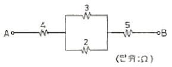
- 48[V]
- 66[V]
- 84[V]
- 102[V]
(정답률: 32%)
15. 그림의 회로암에서 R1=R2=RL인 경우 입력과 출력의 전류비(I1:I2)는 얼마인가?
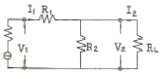
- 2 : 1
- 3 : 1
- 4 : 1
- 6 : 1
(정답률: 67%)
2과목: 전자계산기일반(대략구분)
16. 주기억장치의 크기가 4K 바이트일 때 번지(address)의 내용은?
- 1번지에서 4000 번지까지
- 0번지에서 4000 번지까지
- 1번지에서 4095 번지까지
- 0번지에서 4095 번지까지
(정답률: 56%)
17. 순서도 사용에 대한 설명 중 옳지 않은 것은?
- 프로그램 코딩의 직접적인 자료가 된다.
- 오류 발생시 그 원인을 찾아 수정하기 쉽다.
- 프로그램의 내용과 일 처리 순서를 파악하기 쉽다.
- 프로그램 언어마다 다르게 표현되므로 공동적으로 사용할 수 없다.
(정답률: 83%)
18. 다음 그림의 연산 결과를 올바르게 나타낸 것은?
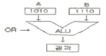
- 1001
- 1010
- 1100
- 1110
(정답률: 66%)
19. 다음 중 8421 코드는?
- BCD 코드
- Gray 코드
- Binary 코드
- Excess-3 코드
(정답률: 69%)
20. 중앙처리장치에 있는 장치로 초기에 연산될 데이터를 보관하는 장소로 사용되며 연산 후에는 산출 및 논리연산 결과를 일시적으로 저장하는 장치는?
- 가산기(Adder)
- 누산기(Accumulator)
- 보수기(Complementary)
- 상태 레지스터(Status Register)
(정답률: 79%)
21. 논리 비교 동작은 다음 어느 동작과 같은가?(그림 없이 푸는 문제입니다. 오류신고 자제 부탁 드립니다.)
- AND
- OR
- EX-OR
- NAND
(정답률: 60%)
22. operating system에서 제어 프로그램에 해당되지 않는 것은?
- 감시 프로그램(supervisor program)
- 데이터 관리 프로그램(data management program)
- 작업 관리 프로그램(job management program)
- 언어 번역 프로그램(language translator program)
(정답률: 64%)
23. 기억장치의 주소를 4비트(bit)로 구성할 경우 나타낼 수 있는 최대 경우의 수는?
- 8
- 16
- 32
- 64
(정답률: 68%)
24. 모든 명령어의 길이가 같다고 할 때, 수행시간이 가장 긴 주소 지정 방식은?
- 직접(direct) 주소지정 방식
- 간접(indirect) 주소지정 방식
- 상대(relative) 주소지정 방식
- 즉시(immediate) 주소지정 방식
(정답률: 51%)
25. 버스란 MPU, Memory, I/O 장치들 사이에서 자료를 상호 교환하는 공동의 전송로를 말하는데 다음 보기 중 양방향성 버스에 해당하는 것은?
- 주소 버스(Address Bus)
- 제어 버스(Control Bus)
- 데이터 버스(Data Bus)
- 입ㆍ출력 버스(I/O Bus)
(정답률: 48%)
26. 다음 기억장치 중 보조기억장치로 사용되지 않는 것은?
- 자기디스크
- 자기코어
- 자기테이프
- 자기드럼
(정답률: 35%)
27. 컴퓨터의 프로그램은 일의 처리순서를 나타낸 명령어의 집합이다. 명령어의 구성요소는?
- 명령 코드(OP-Code)와 오퍼랜드(Operand)
- 제어 프로그램과 명령 코드(OP-Code)
- 목적 프로그램과 명령 코드(OP-Code)
- 오퍼랜드(Operand)와 실행 프로그램
(정답률: 62%)
28. PCB 제조 과정에서 프린트 배선판 상의 특정 영역에 하는 내열성 비폭 재료로 납땜 작업할 때 이 부분이 땜납이 붙지 않도록 하는 레지스트는?
- 에칭 레지스트(etching resist)
- 솔더 레지스트(solder resist)
- 포토 레지스트(photo resist)
- 도금 레지스트(plating resist)
(정답률: 59%)
29. 한국산업규격(KS)에 의한 부분별 기호의 대분류 중 전기 부분의 분류 기호는?
- KSA
- KSB
- KSC
- KSD
(정답률: 83%)
30. 능동 부품(active compoment)의 능동적 기능이라고 볼 수 없는 것은?
- 신호의 증폭
- 신호의 발진
- 신호의 변환
- 신호의 중계
(정답률: 72%)
3과목: 전자제도(CAD) 이론(대략구분)
31. 제도에서 사용하는 길이의 단위로 옳은 것은?
- ㎜(밀리미터)
- ㎝(센티미터)
- m(미터)
- ㎞(킬로미터)
(정답률: 86%)
32. 전자 제도의 PCB 설계에 적당하지 않은 CAD 소프트웨어는?
- O-CAD
- Auto-CAD
- P-CAD
- CADSTAR
(정답률: 71%)
33. 도면을 작성할 때 실물보다 작게 그리는 척도는?
- 실척
- 현척
- 축척
- 배척
(정답률: 87%)
34. A4 용지의 크기를 올바르게 나타낸 것은?
- 841×1189㎜
- 594×841㎜
- 420×594㎜
- 210×297㎜
(정답률: 84%)
35. PCB Artwork에서 부품을 꽂는 부분의 동박 면을 무엇이라 하는가?
- hole
- point
- pad
- line
(정답률: 70%)
36. 다음은 어떤 부품을 나타내는 기호인가?
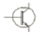
- PNP 트랜지스터
- NPN 트랜지스터
- 접합형 FET
- MOS형 FET
(정답률: 68%)
37. 다음 심벌 중 가변 콘덴서는?
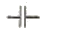
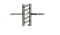
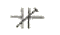
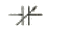
(정답률: 76%)
38. 다음 중 CAD 입력 장치가 아닌 것은?
- 디지타이저
- 태블릿
- 플로터
- 마우스
(정답률: 72%)
39. 인쇄회로기관(PCB)를 사용하여 전자기기를 제조하였을 때 얻어지는 일반적인 장점이 아닌 것은?
- 대량 생산의 효과가 높다.
- 제품의 균일성과 신뢰성이 높다.
- 잡음, 온도 등이 안정 상태를 유지한다.
- 설계 변경이나 다른 회로에 적용이 쉽다.
(정답률: 45%)
40. CAD Tool을 사용하여 Analog 회로 PCB를 설계하고자 할 때 힘(Hum)이나 잡음(Noise) 등을 최소화 하기 위해 가장 신중한 패턴 설계가 요구되는 부분은?
- 접지(Ground) 라인
- 전원(Vcc) 라인
- 신호(Signal) 라인
- 바이어스(Bias) 회로
(정답률: 65%)
41. 폴리에스테르나 폴리마이드 필름에 돔박을 접착한 기판으로 일반적으로 절곡하여 휘어지는 부분에 사용하게 되는 기판은?
- 페놀 기판
- 에폭시 기판
- 콤퍼지트 기판
- 플럭시블 기판
(정답률: 76%)
42. 다음 중에서 수동 부품(소자)인 것은?
- 트랜지스터
- 전자관
- 다이오드
- 콘덴서
(정답률: 64%)
43. 다음 프린터 종류 중 비충격(non-impact) 프린터는?
- 점자 프린터
- 도트 프린터
- 펜 스트로크 프린터
- 레이저 빔 프린터
(정답률: 79%)
44. 전자 응용기기에서 여러 종류의 단위 기능을 가지는 요소들을 조합ㆍ구성하여, 전체적인 동작이나 기능을 계통도로 그린 도면을 무엇이라 하는가?
- 상세도
- 접속도
- 블록도
- 기초도
(정답률: 66%)
45. 프린트 기판 설계시 배선으로 인한 인덕턴스 발생을 줄이기 위한 방법으로 가장 올바른 것은?
- 전원라인을 가늘고, 길게 배선한다.
- 전원라인을 가늘고, 짧게 배선한다.
- 전원라인을 굵고, 길게 배선한다.
- 전원라인을 굵고, 짧게 배선한다.
(정답률: 85%)
46. 제도의 목적을 달성하기 위한 도면의 요건으로 볼 수 없는 것은?
- 대상물의 도형과 함께 필요로 하는 크기, 모양, 자세, 위치의 정보를 포함하여야 한다.
- 도면의 정보를 명확하게 하기 위하여, 복잡하고 어렵게 표현하여야 한다.
- 가능한 한 넓은 기술 분야에 걸쳐 정함성, 보편성을 가져야 한다.
- 복사 및 도면의 보존, 검색, 이용이 확실히 되도록 내용과 양식을 구비하여야 한다.
(정답률: 81%)
47. PCB Artwork에서 하나의 부품을 불러와 배치하였을 때 부품이 갖는 요소로서 관계가 먼 것은?
- 부품 명
- 부품의 색깔
- 부품의 치수
- 부품의 번호
(정답률: 76%)
48. 트랜지스터에 2 S A 735라고 표시되어 있을 때 A가 나타내는 것은?
- pnp형 고주파용
- pnp형 저주파용
- npn형 고주파용
- npn형 저주파용
(정답률: 74%)
49. 회로도의 작성법으로 부적합한 것은?
- 정해진 도 기호를 명확하면서도 간결하게 그려야 한다.
- 전체적인 배치와 균형이 유지되게 그려야 한다.
- 신호의 흐름은 도면의 왼쪽에서 오른쪽으로 한다.
- 신호의 흐름은 아래에서 위로 흐르게 한다.
(정답률: 84%)
50. CAD용 소프트웨어의 구성이라고 볼 수 없는 것은?
- 그래픽 패키지
- 응용 프로그램
- 응용 데이터 베이스
- MGA(Mono-chrome Graphic Adapter)
(정답률: 74%)
51. 도면으로부터 위치 좌표를 읽어 들이는데 사용하는 CAD 시스템의 입력 장치는?
- 마우스(mouse)
- 트랙블(trackball)
- 디지타이저(digitizer)
- 이미지 스캐너(image scanner)
(정답률: 68%)
52. 다음 콘덴서 중 사용할 때 극성에 유의해야 하는 것은?
- 필름 콘덴서
- 페이퍼 콘덴서
- 아이카 콘덴서
- 탄탈전해 콘덴서
(정답률: 75%)
53. 거버(Gerber) 파일에 대한 설명 중 옳지 않은 것은?
- 인터프리터를 이용하여 포토 플로터나 레이저 이미지를 필름이나 다른 미디어에 이미지를 생성하도록 하는 형식이다.
- PCB 필름과 마스터 포토 툴을 생성하는데 쓰이는 세계적 표준이다.
- 거버 형식은 단순히 회로의 이미지를 만드는데 필요한 정보만을 포함한다.
- 거버 형식은 파일 파라미터와 기능 명령의 두가지 요소로만 되어 있다.
(정답률: 35%)
54. PCB에서 노이즈(잡음) 방지 대책 설명으로 옳지 않은 것은?
- 가능한 패턴을 짧게 배선한다.
- 패턴을 최대한 굵게 배선한다.
- 단층 기판이 다층 기판보다 노이즈가 덜 심하다.
- 아날로그 회로와 디지털 회로 부분은 분리하여 실장 배선한다.
(정답률: 58%)
55. 전자회로에서 부품 기호가 들어 있는 것은?
- Directory
- lcon
- Library
- Tool
(정답률: 74%)
56. 일반적으로 전자캐드(CAD)에서 회로도를 그리는 프로그램으로 통칭하는 용어는?
- Layout
- Schematic
- Gerber
- CAM
(정답률: 64%)
57. 다음은 전기, 전자용 부품의 기호이다. 퓨즈에 해당하는 것은?
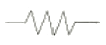
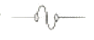
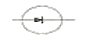
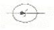
(정답률: 85%)
58. 회로 도면 작성에 대한 결과 파일이며, PCB 설계의 입력 데이터로 사용되는 필수 파일로 패키지명, 부품명, 네트명, 네트와 연결된 부품 핀, 네트와 핀, 부품 속성 등에 대한 정보를 갖고 있는 파일로 옳은 것은?
- 보고서(Report) 파일
- 네트리스트(Netlist) 파일
- 거버(Gerber) 파일
- 데이터 변환(DXF) 파일
(정답률: 71%)
59. 전자 제도에서 작성할 수 있는 도면의 표시로 방법이 아닌 것은?
- 회로도
- 계통도
- 배선도
- 부품가공도
(정답률: 71%)
60. 다음 중 제도 용지의 크기가 가장 큰 용지는?
- A0
- A1
- A4
- A5
(정답률: 81%)